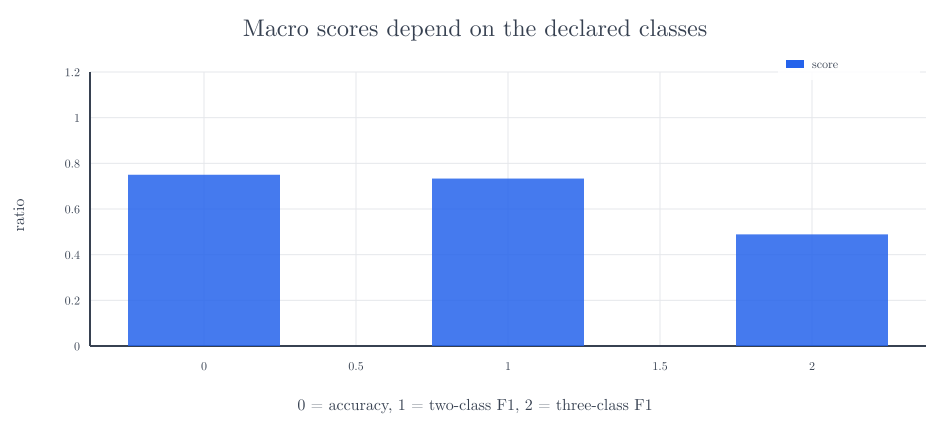
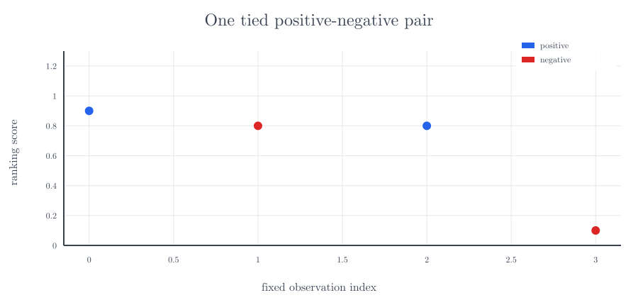
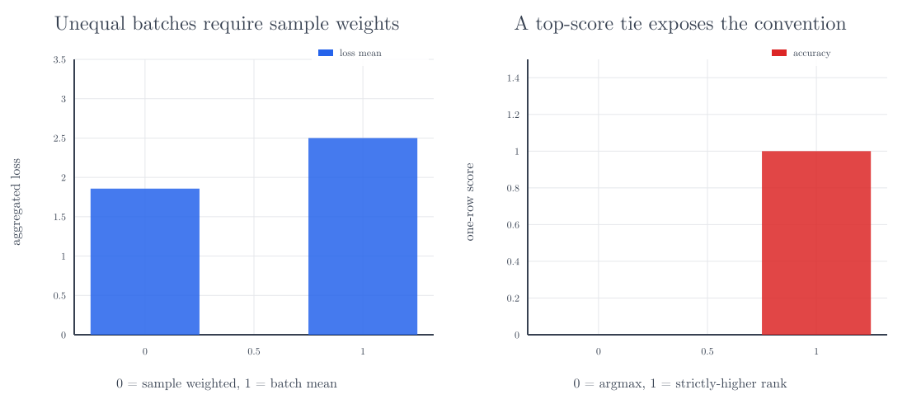
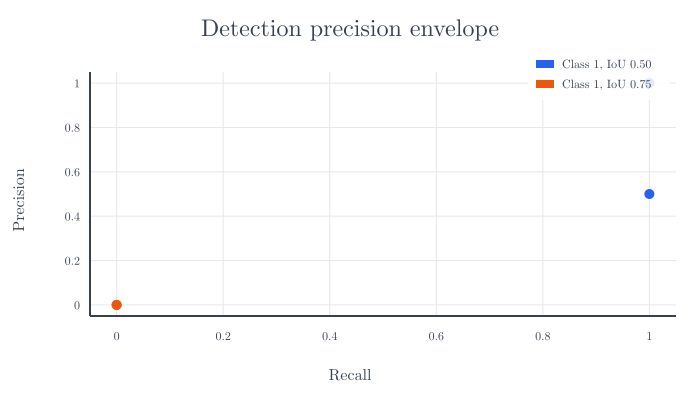

Training Metrics: Counts, Rankings and Detection
Abstract
A single training score can hide which classes fail, how score ties are handled or how unequal batches were averaged. We construct small labelled examples whose confusion counts, ranking comparisons and weighted means can be checked by hand. A score-tie example distinguishes argmax accuracy from strictly higher-score top-k accuracy. A detection example shows how duplicate boxes and the overlap threshold affect mean average precision.
The method
A confusion matrix stores truth in rows and predictions in columns. For one class, precision=TP/(TP+FP), recall=TP/(TP+FN), F1=2TP/(2TP+FP+FN), and IoU=TP/(TP+FP+FN). Zero-denominator precision/recall/F1 are zero here; IoU is NaN if that class never occurs in truth or predictions. Accuracy counts all correct observations. Macro precision/recall/F1 average per-class ratios over the configured class set; macro IoU ignores undefined class IoUs. Thus adding absent classes can change macro F1.
For binary ranking, ROC AUC has the pairwise interpretation
Average precision groups tied score thresholds and sums precision weighted by each recall increase. It does not use trapezoidal interpolation between precision-recall points. Neither ranking score fixes a decision threshold, measures probability calibration or by itself determines utility at a specific operating point. ROC AUC requires both classes; no-positive average precision is zero in this implementation. Inputs are finite scores and binary labels in these examples. Averages over batches must respect sample counts.
The concept diagram below is drawn by dm::graphics::Diagram. Its editable C++
source is the complete block below; regeneration uses the same datamunge toolchain
as the numerical examples. Exports consume the saved local SVG.
#include <dm/dm.hpp>
int main() {
std::filesystem::create_directories("build");
dm::graphics::Diagram diagram;
diagram.node("n0", {0.0, 0}, "Predictions and labels\ndeclare class set");
diagram.node("n1", {5.5, 0}, "Counts or score ranks\nhandle ties explicitly");
diagram.node("n2", {11.0, 0}, "Aggregate ratios\nkeep sample weights");
diagram.edge("n0", "n1").edge("n1", "n2");
diagram.save_svg("build/metrics_concept.svg");
}
Simple examples
Four predictions determine every count
Truth (0,0,1,1), predictions (0,1,1,1) give rows (1,1) and (0,2). Accuracy is 3/4; positive-class precision is 2/3, recall one, F1 4/5 and IoU 2/3. For class zero, precision is one and recall 1/2. Macro F1 is the mean of the two class F1 values, not the harmonic mean of macro precision and macro recall. We also show the effect of declaring a third class absent from both truth and predictions.
#include <dm/dm.hpp>
int main() {
const std::vector<std::int64_t> truth = {0, 0, 1, 1}, prediction = {0, 1, 1, 1};
dm::nn::ConfusionMatrix cm(2), expanded(3);
for (std::size_t i = 0; i < truth.size(); ++i) {
cm.add(truth[i], prediction[i]);
expanded.add(truth[i], prediction[i]);
}
dm::dstruct::DataFrame t;
std::vector<double> cls, precision, recall, f1, iou, support;
for (std::size_t i = 0; i < 3; ++i) {
const auto m = expanded.per_class(i);
cls.push_back(i);
precision.push_back(m.precision);
recall.push_back(m.recall);
f1.push_back(m.f1);
iou.push_back(m.iou);
support.push_back(m.support);
}
t.add_column("class", cls);
t.add_column("precision", precision);
t.add_column("recall", recall);
t.add_column("f1", f1);
t.add_column("iou", iou);
t.add_column("support", support);
auto p = dm::graphics::RPlot::create();
p.bars({0, 1, 2}, {cm.accuracy(), cm.macro().f1, expanded.macro().f1}, "score", {37, 99, 235}, .5)
.title("Macro scores depend on the declared classes")
.x_label("0 = accuracy, 1 = two-class F1, 2 = three-class F1")
.y_label("ratio")
.y_limits(0, 1.2);
std::filesystem::create_directories("build");
p.size(950, 430).save_svg("build/metrics_counts.svg");
std::print(
"{}\n\nAccuracy: {:.6f}; two-class macro F1: {:.6f}; three-class macro F1: {:.6f}.\n",
t.to_md(6),
cm.accuracy(),
cm.macro().f1,
expanded.macro().f1);
}| class | precision | recall | f1 | iou | support |
|---|---|---|---|---|---|
| 0 | 1.000000 | 0.5 | 0.666667 | 0.500000 | 2 |
| 1 | 0.666667 | 1.0 | 0.800000 | 0.666667 | 2 |
| 2 | 0.000000 | 0.0 | 0.000000 | nan | 0 |
Accuracy: 0.750000; two-class macro F1: 0.733333; three-class macro F1: 0.488889.

Tied scores contribute together
For truth (1,0,1,0) and scores (.9,.8,.8,.1), positive-negative comparisons give three wins and one tie: AUC=3.5/4=.875. Average precision is 1*(1/2)+(2/3)*(1/2)=5/6. Both tied .8 observations enter at the same threshold. The resulting scores summarize rankings on four fixed observations; they are not a model-validation study and do not justify choosing a classifier from this tiny sample.
#include <dm/dm.hpp>
int main() {
const std::vector<int> truth = {1, 0, 1, 0};
const std::vector<double> score = {.9, .8, .8, .1};
const double auc = dm::nn::roc_auc(truth, score), ap = dm::nn::average_precision(truth, score);
if (std::abs(auc - .875) > 1e-14 || std::abs(ap - 5. / 6) > 1e-14)
throw std::runtime_error("ranking reference mismatch");
dm::dstruct::DataFrame t;
t.add_column("truth", std::vector<double>{1, 0, 1, 0});
t.add_column("score", score);
auto p = dm::graphics::RPlot::create();
p.points({0, 2}, {.9, .8}, "positive", {37, 99, 235}, 6)
.points({1, 3}, {.8, .1}, "negative", {220, 38, 38}, 6)
.title("One tied positive-negative pair")
.x_label("fixed observation index")
.y_label("ranking score")
.y_limits(0, 1.3);
std::filesystem::create_directories("build");
p.size(900, 430).save_svg("build/metrics_ranking.svg");
std::print("{}\n\nROC AUC: {:.9f}; average precision: {:.9f}.\n", t.to_md(3), auc, ap);
}| truth | score |
|---|---|
| 1 | 0.9 |
| 0 | 0.8 |
| 1 | 0.8 |
| 0 | 0.1 |
ROC AUC: 0.875000000; average precision: 0.833333333.

Checking the conventions
Batch aggregation and top-score ties
Batch mean losses one and four, from batches of five and two observations, combine to 13/7, not 2.5. WeightedMean retains that sample weighting. Separately, one score row (.5,.5,0) with true label one has two equally maximal classes. Argmax accuracy chooses the first maximum. The native top-k routine counts strictly higher scores, so a true class tied at the maximum passes top-k even at k=1. This convention can admit more than k tied classes and therefore need not equal argmax accuracy at k=1.
#include <dm/dm.hpp>
int main() {
dm::nn::WeightedMean mean;
mean.add(1, 5);
mean.add(4, 2);
const auto scores = dm::nn::from_vector(std::vector<double>{.5, .5, 0}, {1, 3}),
label = dm::nn::from_vector(std::vector<std::int64_t>{1});
const double argmax = dm::nn::accuracy(scores, label),
top = dm::nn::top_k_accuracy(scores, label, 1);
dm::dstruct::DataFrame t;
t.add_column(
"metric",
std::vector<std::string>{
"sample-weighted loss", "unweighted batch loss", "argmax accuracy", "strict-rank top-1"});
t.add_column("value", std::vector<double>{mean.value(), 2.5, argmax, top});
auto loss = dm::graphics::RPlot::create(), tie = dm::graphics::RPlot::create();
loss.bars({0, 1}, {mean.value(), 2.5}, "loss mean", {37, 99, 235}, .5)
.title("Unequal batches require sample weights")
.x_label("0 = sample weighted, 1 = batch mean")
.y_label("aggregated loss")
.y_limits(0, 3.5);
tie.bars({0, 1}, {argmax, top}, "accuracy", {220, 38, 38}, .5)
.title("A top-score tie exposes the convention")
.x_label("0 = argmax, 1 = strictly-higher rank")
.y_label("one-row score")
.y_limits(0, 1.5);
std::filesystem::create_directories("build");
dm::graphics::RLayout::create(1, 2).add(loss).add(tie).size(1100, 490).fit_panels().save_svg(
"build/metrics_aggregation.svg");
std::print("{}\n\nWeighted sample count: {}.\n", t.to_md(9), mean.count());
}| metric | value |
|---|---|
| sample-weighted loss | 1.857142857 |
| unweighted batch loss | 2.500000000 |
| argmax accuracy | 0.000000000 |
| strict-rank top-1 | 1.000000000 |
Weighted sample count: 7.

Bounding-box detection
Match boxes separately within each image and class, in descending score order. A ground-truth box can be matched once. Duplicate detections and detections in images without a matching object count as false positives. Intersection over union (IoU) controls which overlaps qualify. Integrating the nonincreasing precision envelope over recall gives average precision (AP). The mean includes only classes with ground truth. The evaluator represents an absent class with AP −1, which the table displays as missing.
#include <dm/dm.hpp>
int main() {
namespace model = dm::nn::models;
using Box = dm::nn::Box;
using Truth = model::DetectionEvaluationTruth;
using Prediction = model::DetectionEvaluationPrediction;
const Box unit{0, 0, 1, 1};
const std::vector<Truth> truth{{0, 0, unit}, {1, 0, unit}, {0, 1, {2, 2, 4, 4}}};
const std::vector<Prediction> predictions{
{0, 0, .9f, unit}, {0, 0, .8f, unit}, {1, 0, .7f, unit},
{0, 1, .6f, {2, 2, 4, 3.2f}}, {9, 1, .5f, {2, 2, 4, 4}}, {0, 2, .99f, unit}};
const std::vector<int> images{0, 1, 9};
auto check = [](double actual, double expected) {
if (!(std::abs(actual - expected) < 1e-12))
throw std::runtime_error(std::format("Expected {:.12g}, got {:.12g}", expected, actual));
};
check(dm::nn::box_iou(dm::nn::BoxT<double>{0, 0, 2, 2}, dm::nn::BoxT<double>{1, 1, 3, 3}), 1. / 7);
check(dm::nn::box_iou(unit, Box{1, 0, 2, 1}), 0);
check(dm::nn::box_iou(dm::nn::BoxT<double>{}, dm::nn::BoxT<double>{}), 0);
auto plot = dm::graphics::RPlot::create();
std::print("| IoU cutoff | Class 0 AP | Class 1 AP | Class 2 AP | mAP |\n| ---: | ---: | ---: | :--- | ---: |\n");
for (const double threshold : {.5, .75}) {
const auto a = model::EvaluateDetectionClass(predictions, truth, images, 0, threshold, false, true);
const auto b = model::EvaluateDetectionClass(predictions, truth, images, 1, threshold, false, true);
const auto absent = model::EvaluateDetectionClass(predictions, truth, images, 2, threshold, false, true);
const double ap0 = a.integral.item(), ap1 = b.integral.item();
const double mean = (ap0 + ap1) / 2;
check(ap0, 5. / 6);
check(ap1, threshold == .5 ? 1. : 0.);
check(absent.integral.item(), -1.);
check(mean, threshold == .5 ? 11. / 12 : 5. / 12);
std::print("| {:.2f} | {:.6f} | {:.6f} | absent | {:.6f} |\n", threshold, ap0, ap1, mean);
plot.points(b.recall.to_vector<double>(), b.precision.to_vector<double>(),
std::format("Class 1, IoU {:.2f}", threshold),
threshold == .5 ? dm::graphics::RGB{37, 99, 235} : dm::graphics::RGB{234, 88, 12}, 5);
}
check(model::EvaluateDetectionClass({}, truth, images, 0, .5, false, true).integral.item(), 0.);
check(model::EvaluateDetectionClass({}, {}, images, 0, .5, false, true).integral.item(), -1.);
const std::vector<Prediction> late_hits{{9, 0, .9f, unit}, {0, 0, .8f, unit}, {1, 0, .7f, unit}};
check(model::EvaluateDetectionClass(late_hits, truth, images, 0, .5, false, true).integral.item(), 2. / 3);
std::filesystem::create_directories("build");
plot.title("Detection precision envelope").x_label("Recall").y_label("Precision")
.x_limits(-.05, 1.05).y_limits(-.05, 1.05).size(700, 400).save_svg("build/metrics_detection.svg");
}| IoU cutoff | Class 0 AP | Class 1 AP | Class 2 AP | mAP |
|---|---|---|---|---|
| 0.50 | 0.833333 | 1.000000 | absent | 0.916667 |
| 0.75 | 0.833333 | 0.000000 | absent | 0.416667 |

Conclusion
Counts, declared class sets, ranking ties and aggregation weights determine the score. The examples compute exact values before applying those metrics to a trained model. They do not identify a universally best metric, classifier, operating threshold or probability-calibration policy.
References
- scikit-learn developers. ROC AUC and average precision. Canonical binary-ranking definitions and non-interpolated AP.
- TensorFlow authors. top_k. Compare tie policies explicitly; the strict-rank top-k implementation shown here is defined by its native contract.